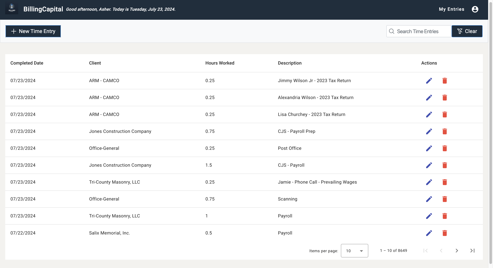
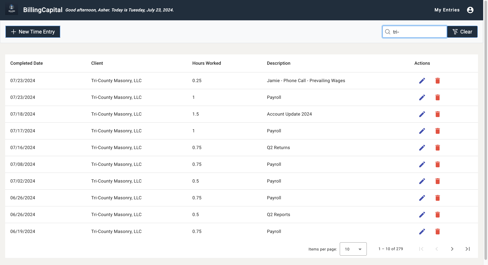
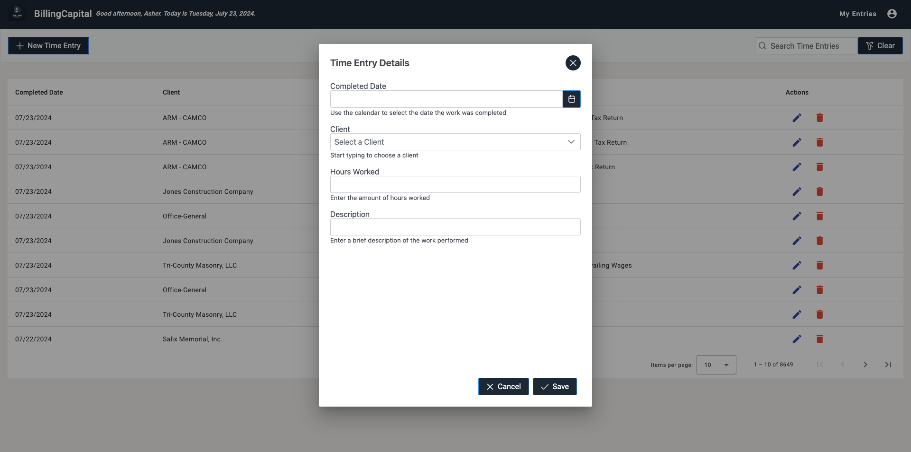

What's New?
A Brand New User Interface

The interface has been upgraded. You can see now that all of your time entries are displayed in a tabular format.
You can access any time entry that you have entered from this new layout.
You are still able to edit and delete any time entry that you have entered by using the icons in that specific time entry row.
Search your Time Entry History
The new time entry table also gives you the ability to search from epecific entries.
Start typing a date (in MM/DD/YYYY format), client name, or even description and the table will automatically filter the entries for you. To clear that search, just use the clear button located to the right of the search bar.
Time Entry remains largely the same
Entering a new time is similar to the old version. Simply click the "New Time Entry" button to bring up the time entry dialog.
Click the calendar button to select the date from the calendar.
Similarly to the previous version, you can start typing a client name and the system will automatically suggest a client name for you.
You can then enter your hours spent and description.
Questions?
If you have have any questions or experience any issues, don't bother asking my "tech savy" dad. Feel free to email me directly with anything that you need!